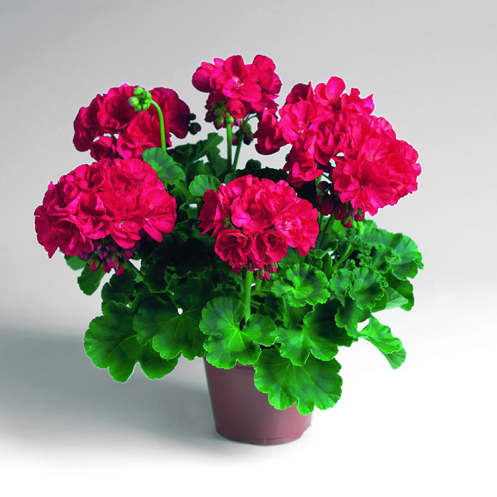

Уход и проблемы выращивания
Уход за геранью в домашних условиях заключается в следующем:

- поставьте на хорошо освещённое место;
- весной и летом, когда ночная температура не меньше 16 °С,
выносите герань на балкон или лоджию. Свежий воздух способствует хорошему росту и обильному цветению.
Когда похолодает, верните растение в квартиру;
- не сажайте в слишком большой горшок.
Иначе сам куст пышно разрастётся, а цветение, если и начнётся, будет скудным;
- выбирайте подходящую почву;
- поливайте цветок, когда на глубине примерно 1 см земля будет сухой;
- не обрызгивайте листья растения;
- поливайте растение отстоявшейся, фильтрованной или кипячёной водой комнатной температуры.
Холодная вызовет проблемы с корнями, а из-за жёсткой водопроводной на грунте образуется белый налёт;
- ежегодно делайте обрезку;
- не перекармливайте удобрениями;
- регулярно осматривайте герань, чтобы сразу обнаружить проблемы.